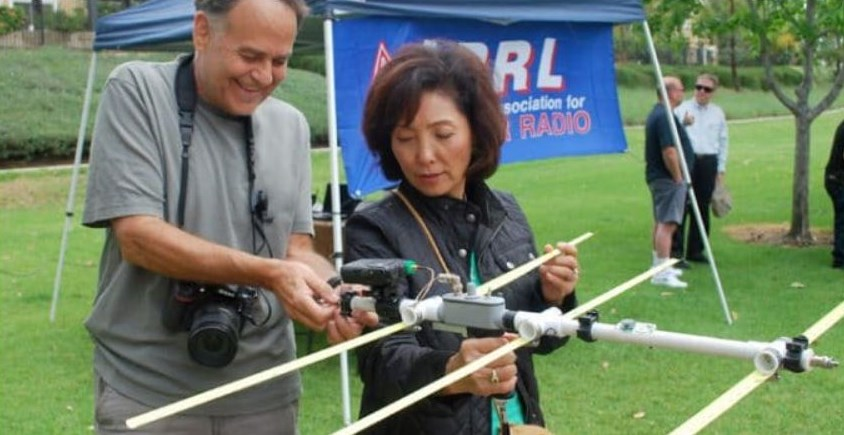

Someone hides a small transmitter, the “fox,” and everyone else tracks it down using radio direction finding. Handheld antennas, a map full of bearing lines, and a lot of running around.

A directional antenna hears the fox loudest when it points straight at it. One reading gives a direction; several readings from different places cross where the fox is hiding.
A small hidden transmitter that sends a signal every so often. There can be more than one.
The direction the signal is coming from, taken with a directional antenna and a compass.
Bearings from different spots drawn on a map. Where the lines cross, start looking.
Kids learn to track a hidden transmitter. ToddFun, starts at the hunt.
A first-timer finds the fox before the experienced hunters. KM4ACK.
K1KFX-1.Download the map on Wi-Fi before you leave, so it works anywhere.
One hunt, you both join it, one shared map.
Watch the iPhone setup video below once before your first hunt. Skip activation.
What the app does, start to finish.
iPhone only. Skip activation.